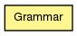

lsys
Class Grammar
java.lang.Object
 lsys.Grammar
lsys.Grammar
public class Grammar
- extends java.lang.Object

| Method Summary |
void |
addRule(java.lang.String pre,
java.lang.String prod)
|
void |
addRule(java.lang.String pre,
java.lang.String[] prods,
float[] probs)
|
void |
addRule(java.lang.String pre,
java.lang.String prod,
float prob)
|
java.util.ArrayList<java.lang.String> |
getSentence()
|
Grammar |
init(java.lang.String axiom)
|
int |
numOfSymbols()
|
void |
reset()
|
void |
step()
|
java.lang.String |
symbol(int i)
|
java.lang.String |
toString()
|
| Methods inherited from class java.lang.Object |
equals, getClass, hashCode, notify, notifyAll, wait, wait, wait |
Grammar
public Grammar()
Grammar
public Grammar(java.lang.String axiom)
init
public Grammar init(java.lang.String axiom)
addRule
public void addRule(java.lang.String pre,
java.lang.String prod)
addRule
public void addRule(java.lang.String pre,
java.lang.String prod,
float prob)
addRule
public void addRule(java.lang.String pre,
java.lang.String[] prods,
float[] probs)
reset
public void reset()
getSentence
public java.util.ArrayList<java.lang.String> getSentence()
numOfSymbols
public int numOfSymbols()
symbol
public java.lang.String symbol(int i)
step
public void step()
toString
public java.lang.String toString()
- Overrides:
toString in class java.lang.Object